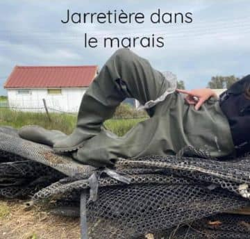

Les Insurgés
des déchets


Les Insurgés
des déchets


🗨️ Comment participer à l'une de vos actions ?
🗨️ Quel équipement, quelle tenue porter
pour participer à un ramassage à vos côtés ?
🗨️ Que faites-vous des déchets ramassés ?
🗨️ Mais n'est ce pas le boulot des communes
de ramasser les déchets ?
🗨️ Quelle différence entre un bon et
un mauvais ramasseur 😉 ?
🗨️ À quel âge peut-on commencer à ramasser ?
🗨️ Comment devenir membre actif de votre association ?
🗨️ Quel est l'objet le plus insolite que vous ayez trouvé ?
F🌎A🌍Q🌏Une association de bénévoles du bassin de Marennes unis pour ramasser, trier et revaloriser les déchets
Vous pouvez nous rejoindre sur notre page Facebook ou tout simplement nous contacter par mail, ou par téléphone et vous inscrire à une ou plusieurs actions de ramassage de déchets selon vos disponibilités.
Il est préférable de s’habiller avec des vêtements confortables et que vous ne craignez pas de salir ou d’abimer. Choisissez de porter des chaussures de randonnée ou de sécurité ou des bottes (selon le lieu du ramassage) et de prévoir des gants épais (par expl des gants de bricolage).
Nous avons à coeur d’aller jusqu’au bout de notre démarche, cela implique de trier tout ce que nous ramassons pour donner une seconde vie aux objets (par exemple les poches à huîtres, les chambres à air pour les ostréiculteurs), nous donnons à un recycleur les canettes en fer pour l’association caritative KNETPARTAGE.fr, pour le recyclage en déchèterie, pour des projets artistiques et éducatifs. Par exemple, Marion récolte les masques pour faire des tenues vestimentaires et tenter d’éveiller les consciences quant à cette pollution catastrophique que sont les masques chirurgicaux, ffp2...
Nous travaillons de concert avec les municipalités car face aux incivilités de plus en plus nombreuses et aux dépôts sauvages, il est grand temps d’agir tous ensemble. « Ce ne sont pas nos déchets mais c’est notre planète ».
Déjà le fait de ramasser est déjà une superbe action mais il est vrai que la différence entre un bon et un mauvais ramasseur est de faire le tri des déchets collectés. Nous avons à coeur d’aller jusqu’au bout de notre démarche, cela implique de trier tout ce que nous ramassons.
Il n’y a pas d’âge pour commencer mais il faut que le lieu soit sécurisant. Un enfant de 3 ans peut ramasser sur une plage avec une paire de gants (car nous pouvons tomber sur des seringues ou des objets tranchants…) mais pas dans un fossé immergé par exemple. Il est préférable de nous contacter si vous souhaitez venir avec des enfants afin que nous étudions cela ensemble.
Toutes les modalités concernant l'adhésion à notre association, c'est ici
Vous aurez alors toutes les informations pour devenir, vous aussi, un Insurgé des déchets !
Une jarretière dans un marais ! 👰 La preuve en image :
Quelques rappels fondamentaux...
...la durée de vie des déchets.
Fruits & Végétaux
3-6 mois
Papier
3-12 mois
Mégot
1-5 ans

Chewing gum
5 ans

Conserve
10-100 ans

Briquet
100 ans

Pile
200 ans
Sac plastique
450 ans

Bouteille d'eau
100-1000 ans

Polystyrène
1000 ans
Verre
5000 ans